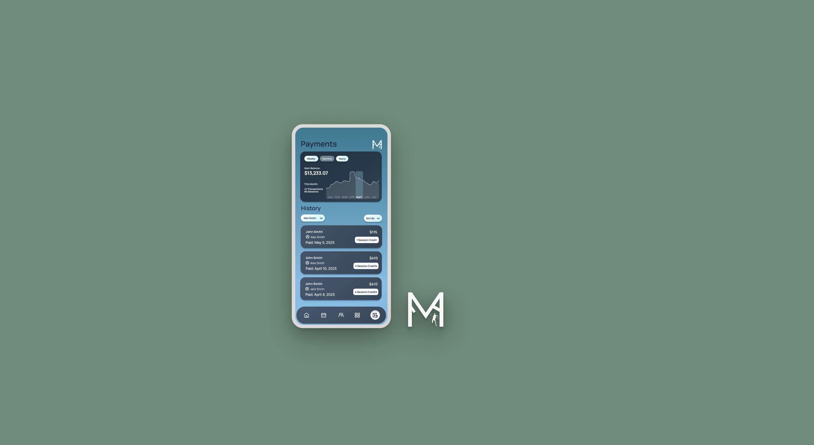

Case study is currently in development!
I'm working on documenting the complete design process, check back soon for the full story!
UX Designer, UX Researcher,
Product Strategy
Figma, FigJam, Miro
User Research
User Interview
Competitive Analysis
Persona Development
Wireframing
3 Months

I'm working on documenting the complete design process, check back soon for the full story!